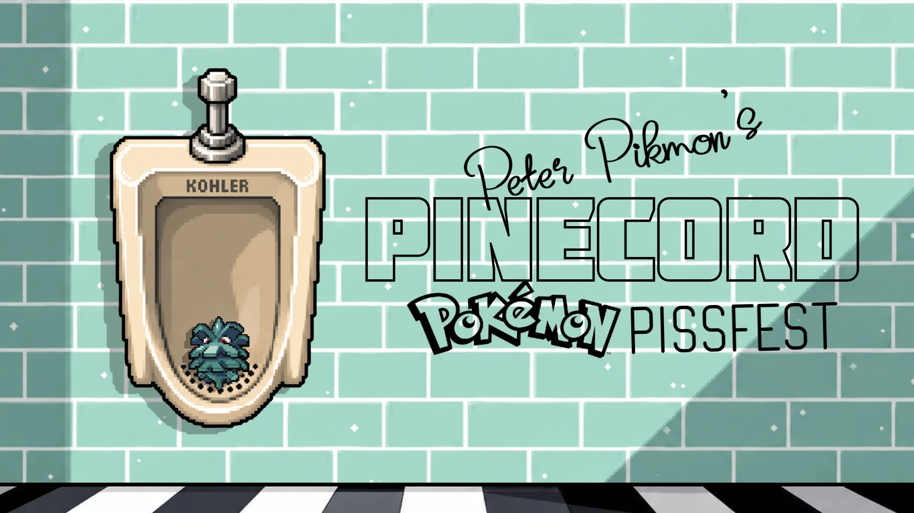

The Draftboard
Kills, damage, MVPs and luck from Pokémon Showdown replays. Pick a league.

Pinecord Pokémon PissfestNat Dex singles, 57 games- Super Champions LeaguePokémon Champions VGC doubles, 166 games
What's new
Version 1.2.1: Playoffs, round one
- Pinecord's first playoff round is in: nine games in four sets, under Games, Playoffs. No replays were saved, so they were rebuilt from the stream videos; Watch plays the video from where that game starts.
- Team sheets for those games, and Pikmon's for Weeks 1 to 7.
- A Pokémon that faints to its own Perish Song now counts as knocking itself out, not as a kill for the other side.
Version 1.2: Playoff bets
- Gambling on Pinecord is open: six play-money bets on the whole playoffs, for members of the Discord server, locking with Pick'em.
- 10 points a bet, and one bet of your choice as your lock, counting double, won or lost.
- Your slip and a public leaderboard beside the bets, with the house's running total. Everyone's slips open when bets lock.
- Pick'em: a bigger countdown, and one sign-in button at the top of the page.
Version 1.1: Playoff Pick'em
- Pick'em on Pinecord: pick the playoff bracket and climb a public leaderboard, with a countdown to when picks lock.
- Sign in with Discord from any tab on Pinecord.
- Draft: the swaps before the playoffs, and the player buttons in two tidy rows.
- Pokémon: copy any set to import into Showdown's teambuilder.
- Main viewer: a turn-by-turn strip on a Pokémon's detailed card.
- Set stats: each set game by game above its totals.
- Super Champions League: standings by set points.
Version 1.0: First release
- One page per draft league: Pinecord Pokémon Pissfest and the Super Champions League.
- Main viewer: kills, damage, MVPs, luck, key moments and a momentum chart for any Showdown replay, singles or doubles.
- Games: every league game by week, with the replay player and results hidden until you ask.
- Sets and playoff series: a best of three shows as one set, with its score and the stats of all its games added up.
- Players, Pokémon and Draft: season tables, head-to-head, the KO matrix and how each draft pick has done.
- Copy any table straight into Google Sheets.